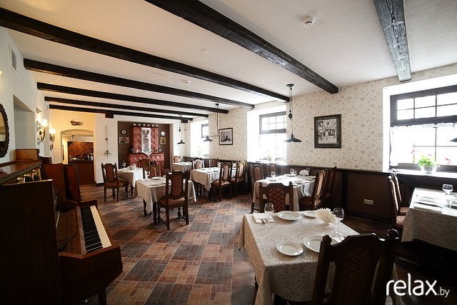
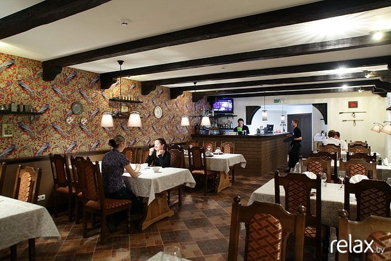
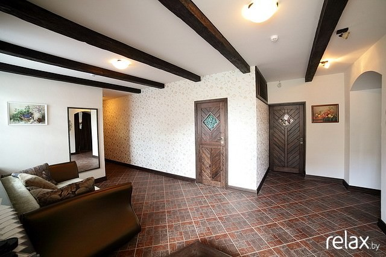
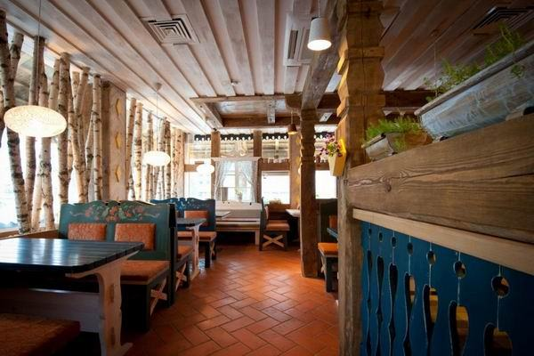
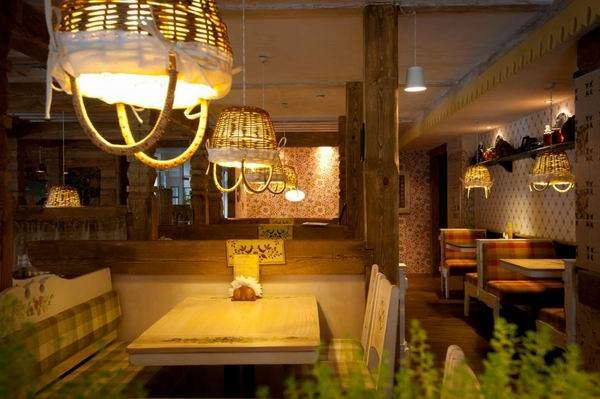
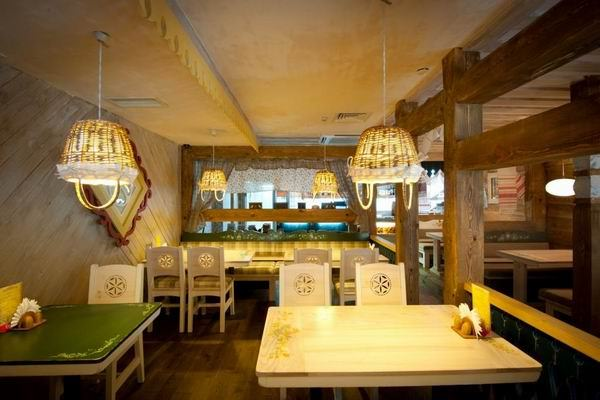
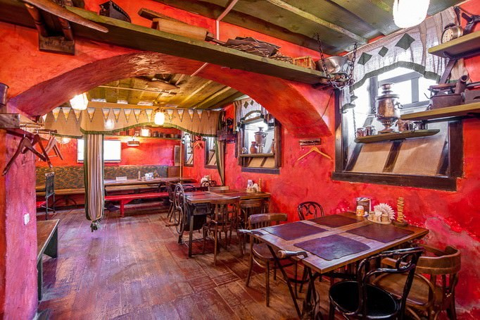
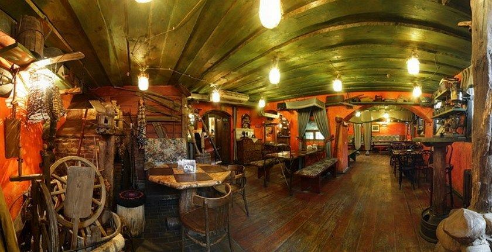

FAQ
What are the most popular restaurants with Belarusian cuisine?
“Kukhmistr” (Karla Marksa str., 40)



“Kamianitsa” (Pervomayskaya str., 18) www.kamyanitsa.by/en/home
“Traktir na Parkovoy” (Pobediteley av., 11) www.en.traktir.by
“Vasilki” (Nezavisimosty av., 16; Nezavisimosty av., 89; P. Glebki str., 5; Yakuba Kolasa str., 37; Bobruyskaya str., 6)



“Lido” (Nezavisimosty av., 49/1; Kulman str., 5a) www.lido.by/en
“Talaka” (Rakovskaya str., 18)

